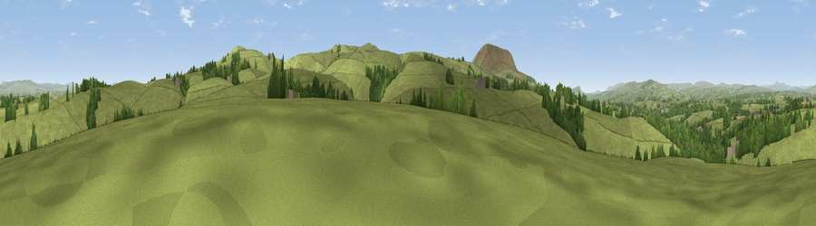

Viewpoint near Rimington
#21557 in England · top 53% of its area beats it · near Rimington · footpathWhere it is
The exact computed spot (SD 83175 45525). Click the marker for map links.
Public access: a public right of way passes within 7 m of this spot. Computed from Natural England's CRoW access layer and OpenStreetMap rights of way — not the legal definitive map. Always verify locally.
The view, rendered

A 360° render of this exact spot computed from the terrain model, tree cover and land cover — summer colours, afternoon light, calibrated against photographs of famous viewpoints. Real trees, hedges and buildings will differ in detail.
The panorama
Grey silhouette: terrain skyline in each direction (720 bearings, Earth curvature and refraction included). Dashed green: skyline with trees (+15 m) and buildings (+8 m) as obstacles. Blue strip: how far the ground is visible on each bearing.
Where the view opens
Wedge length = distance to the farthest visible ground on that bearing (vegetation-aware). Rings at 10, 25 and 50 km.
What fills the view
89% grassland · 9% woodland ·
Angular shares of the visible panorama (visual magnitude), not map area. Landscape diversity 0.17 (0–1 Shannon).
Key numbers
More beautiful places nearby
The staircase of upgrades: each row has a higher view potential than everything closer. Driving times are estimates from straight-line distance, calibrated against real road routing — check an actual route before setting out.
| Place | Direction | Drive | Score |
|---|---|---|---|
| Viewpoint near Blacko | SSE · 2 km | ~6 min | 68.9 |
| Weets Hill | ESE · 3 km | ~7 min | 69.3 |
| Viewpoint near Barley | SW · 5 km | ~10 min | 76.3 |
| Pendle Hill | SSW · 5 km | ~11 min | 76.5 |
| Parlick | W · 24 km | ~39 min | 77.5 |
| Darwen Hill | SSW · 28 km | ~45 min | 80.7 |
| Rivington Pike | SSW · 37 km | ~56 min | 81.9 |
| White Brow | SSW · 37 km | ~56 min | 82.9 |
53.90561, -2.25758 · source: screening · position refined by local search. Computed location — check access rights before visiting.